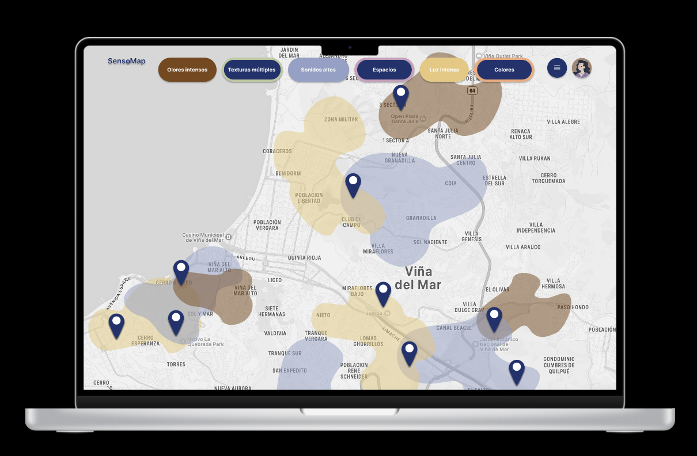
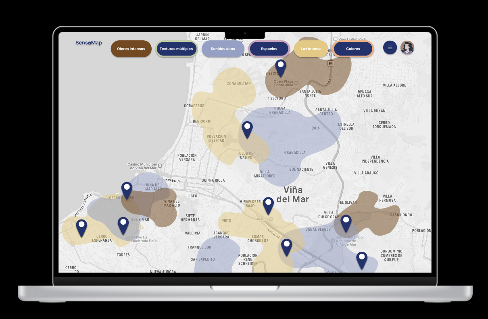

SensoMap
Proyecto en equipo del Taller de Diseño de Interacción 2025. “SensoMap” es un mapa sensorial de Viña del Mar que registra y visualiza la relación entre percepción, emoción y entorno. A través de recorridos participativos, el mapa integra experiencias táctiles, sonoras y lumínicas, articulando una lectura expandida del espacio urbano más allá de lo visual.
Ver proyecto en WikiCasiopea: Ir a la wiki
 
